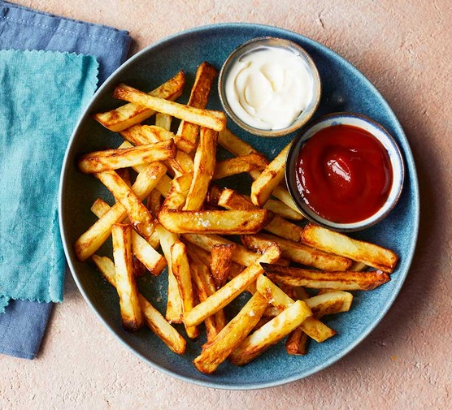

Chips

Description
Golden fried chips with ketchup and mayonaise.
Ingredients
- Crispy potatoes
- Oil (for frying potatoes)
- Salt (for seasoning)
- Pepper (for seasoning)
Steps
- Heat oil to 375F.
- Cut potatoes into thin stripes,dry.
- Fry in batches,2-3 minutes each.
- Drain,season, enjoy with dips!